Merge, Join & Concatenate
Master the art of combining disparate DataFrames with mathematical precision. Explore relational joins, multi-table normalization, index alignments, Cartesian explosion traps, validation guards, and end-to-end multi-table production pipelines.
Table of Contents
This master guide is organized into 19 structured sections. Use the interactive roadmap below to navigate seamlessly through concepts, visual diagrams, code demonstrations, and case studies.
1. Why Combine DataFrames? Normalization vs Unified Analysis
In real-world data science, machine learning, and enterprise business intelligence, data almost never arrives in a single, neat spreadsheet. Whether you work in an e-commerce giant, an international bank, or a university administration office, transactional data is intentionally scattered across dozens of relational database tables, separate CSV files, and microservice APIs.
Why do software engineers design databases this way? The answer is Database Normalization. Storing a customer's full postal address, credit limit, and registration date inside every single order transaction would cause massive data duplication, waste gigabytes of disk storage, and introduce dangerous update anomalies (e.g., if a customer changes their address, you would have to update 10,000 past order rows!).
Imagine your college administration:
• The Registrar Office maintains a master table of enrolled students (student_id, full_name, branch, admission_year).
• The Exam Cell publishes a separate spreadsheet of semester grades (student_id, subject, marks).
• The Hostel Warden tracks hostel room allocations (student_id, hostel_block, room_no).
To analyze whether hostel residents score higher in computer science exams, you cannot examine any single spreadsheet in isolation! You must combine (merge) them using the unique student_id key.
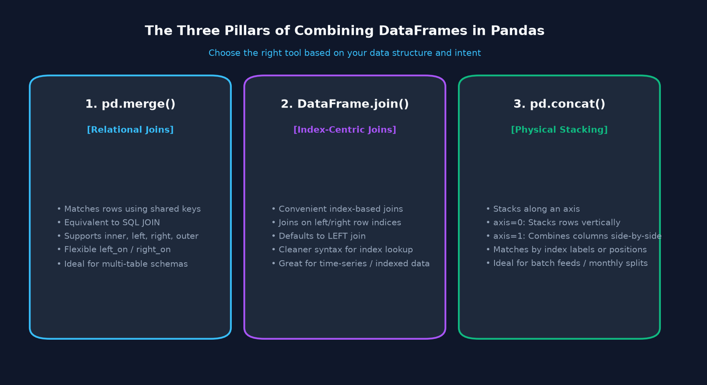
The Three Architectural Pillars in Pandas
Pandas provides three primary tools to bring disparate datasets together. Understanding their distinct architectural purposes is the first step toward master-level data manipulation:
| Tool | Primary Philosophy | Matching Mechanism | Typical Real-World Use Case |
|---|---|---|---|
pd.merge() |
Relational Database Joins | Matches rows based on shared values in one or more column keys (or index-to-column). | Connecting Orders to Customers, Transactions to Account Details, Patient IDs to Diagnostic Lab Reports. |
DataFrame.join() |
Index-Centric Lookup | Matches rows based on the DataFrame index (left join by default). | Merging financial time-series aligned by Date timestamps, or pre-indexed dimension tables. |
pd.concat() |
Physical Axis Stacking | Stacks tables vertically (rows, axis=0) or binds them horizontally (columns, axis=1). |
Combining 12 monthly sales CSV files into an annual master file, or appending engineered feature batches. |
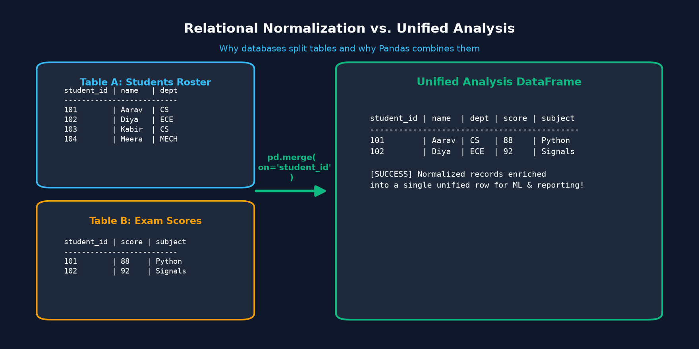
Why Data Combination is Crucial for Data Analysts
Combining DataFrames is the bridge between transactional engineering and statistical modeling. Without robust join operations:
- Feature Engineering Fails: Machine learning algorithms require a single feature matrix where every row represents an independent observation. You cannot feed separate customer and purchase tables to XGBoost or Scikit-Learn without first merging them.
- Cross-Department Analytics is Impossible: Marketing ROI cannot be computed without joining ad campaign expenditures from Facebook/Google Ads with actual customer purchases recorded in Stripe or Shopify.
- Data Audits are Blind: Without indicator joins, business leaders cannot answer simple questions like: "How many registered students never appeared for midterms?" or "How many warehouse inventory items have zero sales this quarter?"
2. The pd.merge() Method Anatomy & Key Parameters
The pd.merge() function is the core relational workhorse of the Pandas library. Operating identically to ANSI SQL JOIN clauses, it inspects row values within key columns and aligns complementary data side-by-side.
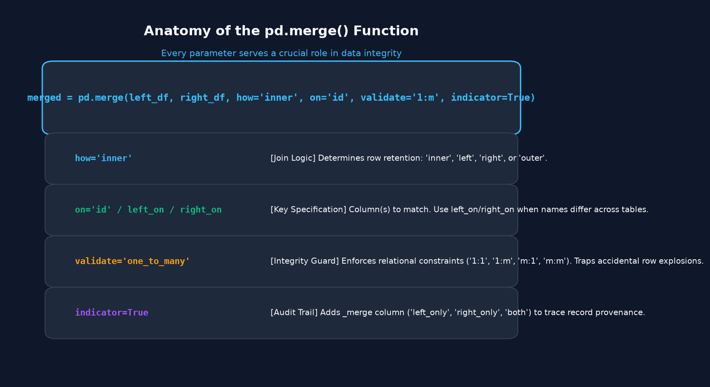
Full Syntax Breakdown
The standard functional invocation of pd.merge() offers comprehensive control over how tables align:
pd.merge( left, # The primary (left) DataFrame right, # The secondary (right) DataFrame how='inner', # Type of join: 'inner', 'left', 'right', 'outer', 'cross' on=None, # Shared column name(s) present in BOTH left and right DataFrames left_on=None, # Column name in the left DataFrame to match on right_on=None, # Column name in the right DataFrame to match on left_index=False, # Use the index of the left DataFrame as the join key right_index=False, # Use the index of the right DataFrame as the join key suffixes=('_x', '_y'),# Suffixes applied to overlapping non-key column names indicator=False, # Adds a categorical column '_merge' auditing record provenance validate=None # Enforces relationship: '1:1', '1:m', 'm:1', 'm:m' )
Comprehensive Parameter Reference Guide
| Parameter | Type / Allowed Values | Default | Practical Architectural Role |
|---|---|---|---|
left, right |
DataFrame or named Series |
Required | The two datasets you want to connect relational records between. |
how |
'inner', 'left', 'right', 'outer', 'cross' |
'inner' |
Determines which rows survive in the output when keys do not match across both tables. |
on |
str or list[str] |
None |
Key column name(s) common to both tables. If omitted and left_on/right_on are None, Pandas infers intersection of column names. |
left_on / right_on |
str or list[str] |
None |
Used when the matching concept exists under different headers (e.g. customer_id in Left, client_ref in Right). |
suffixes |
tuple(str, str) |
('_x', '_y') |
Appended to overlapping non-key column names to prevent naming collisions (e.g. ('date_order', 'date_shipment')). |
indicator |
bool or str |
False |
Creates a special categorical column (defaults to '_merge') reporting whether each row originated from 'left_only', 'right_only', or 'both'. |
validate |
'one_to_one', 'one_to_many', 'many_to_one', 'many_to_many' |
None |
Integrity Guard: Checks whether keys are unique on the specified side(s). If violated, immediately raises pd.errors.MergeError. |
If you execute pd.merge(df_a, df_b) without specifying on=, Pandas automatically joins on every column name that appears in both DataFrames. If both DataFrames happen to have a column named notes or status with completely unrelated meanings, Pandas will treat them as a composite join key, resulting in unexpected empty outputs! Always explicitly specify on= or left_on=/right_on=.
3. Inner Joins: The Strict Mathematical Intersection
An Inner Join is the default joining strategy in Pandas (how='inner'). Mathematically, it computes the strict intersection (A ∩ B) of the key values present in both the Left and Right DataFrames.
If a key appears in the Left DataFrame but is absent from the Right DataFrame, that entire row is discarded. Similarly, if a key appears in the Right DataFrame but is absent from the Left DataFrame, it is discarded. Only rows where the key exists on both sides survive in the resulting DataFrame.
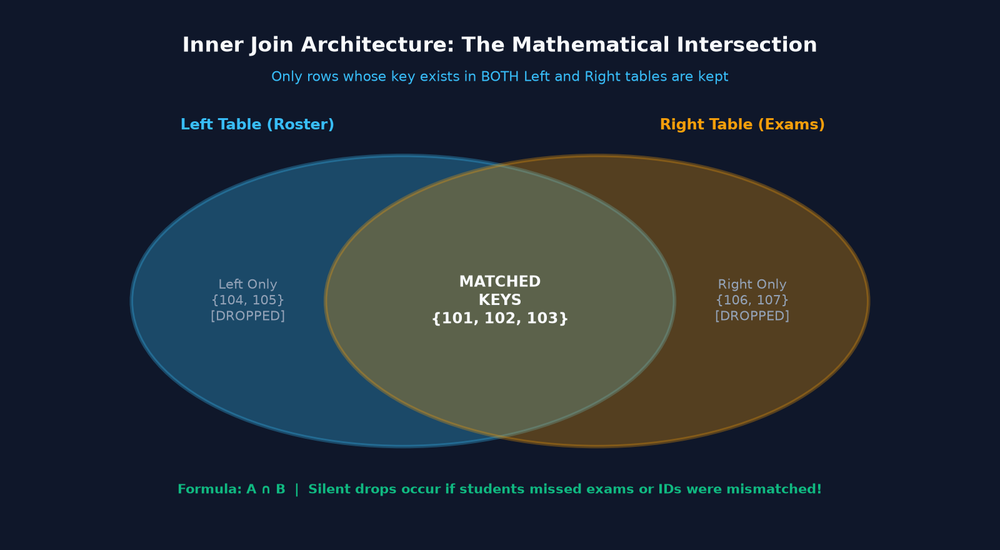
Code Example 1: Basic Student Roster and Exam Marks Inner Join
Let us create a student roster containing 5 students (IDs 101 through 105) and an exam records table containing 5 records (IDs 101, 102, 103, 106, 107). Notice that students 104 and 105 did not take exams, while IDs 106 and 107 belong to guest candidates not registered on the official roster.
import pandas as pd # Table A: Official University Student Roster df_students = pd.DataFrame({ "student_id": [101, 102, 103, 104, 105], "name": ["Aarav", "Diya", "Kabir", "Meera", "Rohan"], "dept": ["CS", "ECE", "CS", "MECH", "IT"] }) # Table B: Midterm Exam Results df_marks = pd.DataFrame({ "student_id": [101, 102, 103, 106, 107], "score": [88, 92, 79, 85, 90], "subject": ["Python", "Signals", "Python", "Thermodynamics", "Networks"] }) # Execute Inner Join df_inner = pd.merge(df_students, df_marks, on="student_id", how="inner") print(df_inner)
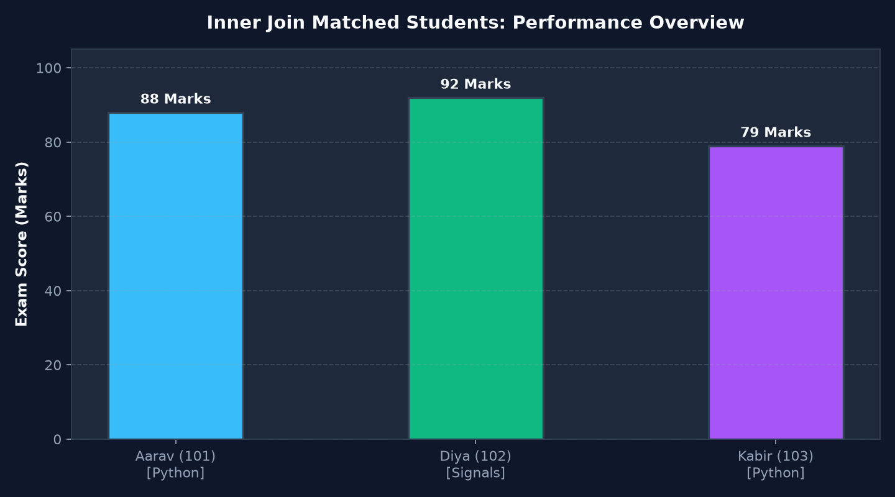
Code Example 2: Filtering and Aggregating Matched Cohorts
Once joined, all columns from both tables coexist in the same DataFrame, allowing direct group-level analytics across previously disconnected attributes:
# Compute average exam score by Department across matched students dept_stats = df_inner.groupby("dept").agg( matched_students=("student_id", "count"), avg_score=("score", "mean") ).reset_index() print(dept_stats)
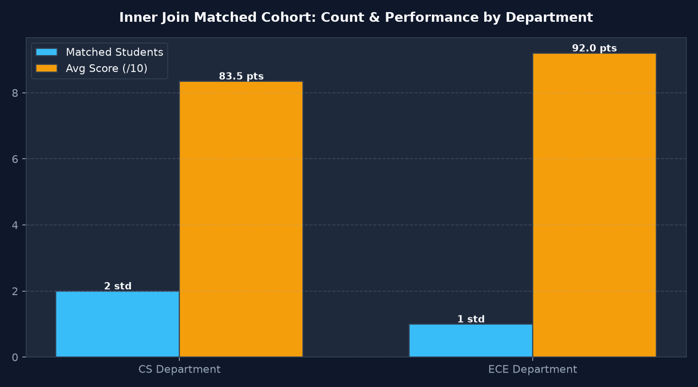
While Inner Join guarantees zero NaN values in key columns, it is dangerous when you are calculating totals or auditing operations. In the example above, students Meera (104) and Rohan (105) completely disappeared from the dataset without warning! If you were computing the university-wide average grade or fee recovery rate, using an Inner Join would silently drop all absent students, artificially inflating your statistics. When you need to preserve all records from a master list, you must use a Left Join.
4. Left Joins: Preserving the Master Dataset
In industry workflows, the Left Join (how='left') is the undisputed workhorse of data analysts. A Left Join guarantees that every single row from the Left DataFrame survives in the final output, regardless of whether a matching key exists in the Right DataFrame.
When a Left row finds a matching key in the Right table, the corresponding Right attributes are pulled in. When a Left row finds no match in the Right table, Pandas automatically fills all columns originating from the Right DataFrame with NaN (Not a Number).
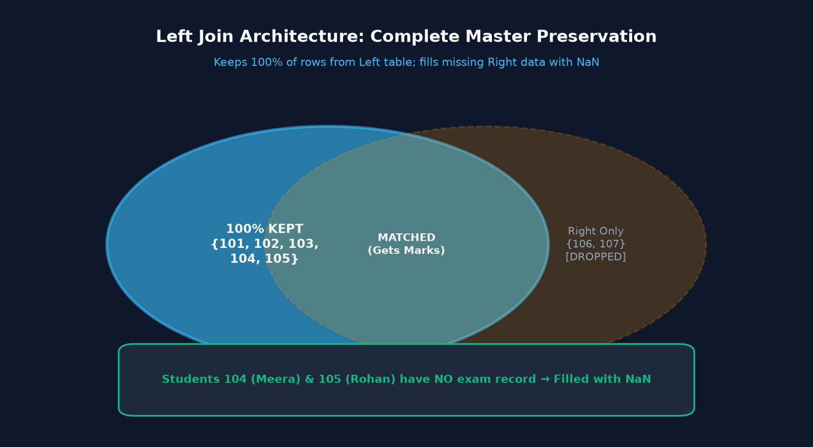
Code Example 1: Preserving All Enrolled Students
Using our student roster as the Left master table, executing a Left Join allows us to clearly identify which students did not sit for the midterm examination:
# Execute Left Join using df_students as the master reference df_left = pd.merge(df_students, df_marks, on="student_id", how="left") print(df_left)
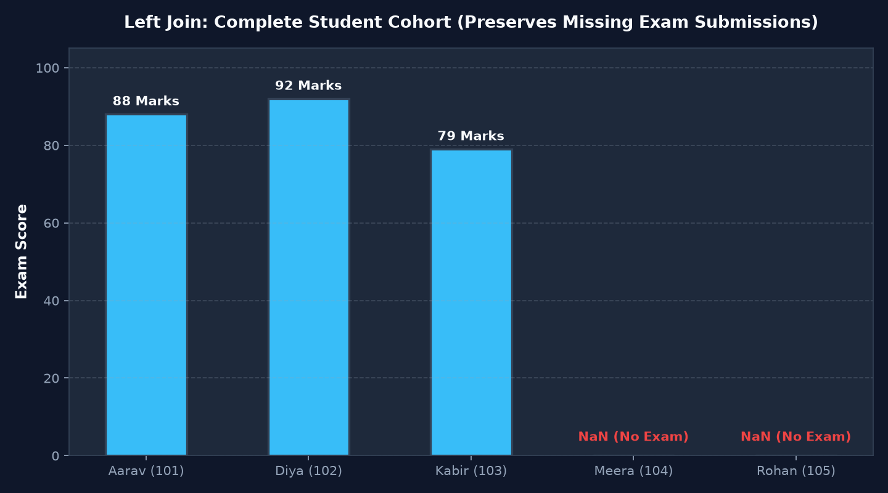
Code Example 2: Detecting and Imputing Missing Attributes
Because Left Join exposes missing relationships as NaN, data analysts can systematically isolate missing entities or impute default fallback values:
# 1. Audit: Find all students who missed their exams absent_students = df_left[df_left["score"].isna()][["student_id", "name", "dept"]] print("--- Absent Students Audit ---") print(absent_students) # 2. Imputation: Fill missing scores with 0 and subject with 'Absent' df_clean_left = df_left.copy() df_clean_left["score"] = df_clean_left["score"].fillna(0.0) df_clean_left["subject"] = df_clean_left["subject"].fillna("Not Attempted") print("\n--- Cleaned Imputed Cohort ---") print(df_clean_left)
Always place your Primary Entity Master Table on the left side of the merge! If you want a list of all customers and their purchases, put Customers on the left. If you want a list of all warehouse products and their quarterly sales, put Products on the left.
5. Right Joins & Full Outer Joins: Preserving Everything
While Inner and Left joins address the vast majority of daily analytics tasks, two additional relational join types are indispensable when auditing synchronization pipelines: Right Joins and Full Outer Joins.
Right Joins (how='right')
A Right Join is the symmetrical inverse of a Left Join. It guarantees that 100% of rows from the Right DataFrame survive in the output. If a key exists in the Right table but is missing from the Left table, Left columns are populated with NaN.
Industry Insight: In professional Python codebases, explicit Right Joins are rarely used. Most senior engineers prefer swapping table positions (pd.merge(df_b, df_a, how='left')) because left-to-right reading order matches human cognition and makes code maintenance significantly easier.
Full Outer Joins (how='outer')
A Full Outer Join computes the complete relational union (A ∪ B) of both DataFrames. It retains every single key that appears in either the Left or Right DataFrame:
- If a key is present in both tables, attributes are merged into a single consolidated row.
- If a key is present only on the left, right columns become
NaN. - If a key is present only on the right, left columns become
NaN.
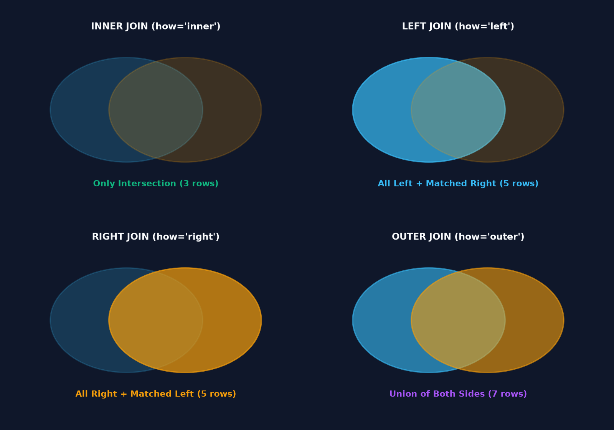
Code Example 1: Full Outer Join with Audit Indicator
Executing an Outer Join with indicator=True reveals every record across both datasets and highlights reconciliation discrepancies:
# Execute Full Outer Join with provenance indicator df_outer = pd.merge(df_students, df_marks, on="student_id", how="outer", indicator=True) print(df_outer)
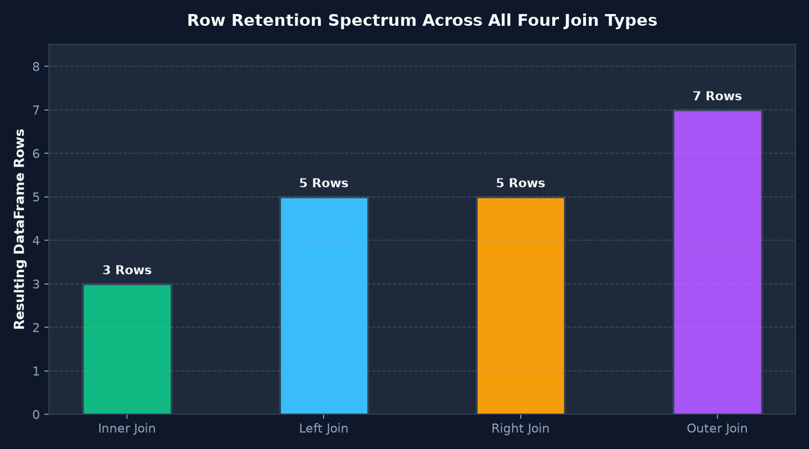
Comparative Join Summary Table
| Join Type | Pandas Argument | Mathematical Concept | Output Row Count in Our Example | When to Choose |
|---|---|---|---|---|
| Inner Join | how='inner' |
A ∩ B (Intersection) | 3 rows | When you require strictly complete records with valid keys on both sides. |
| Left Join | how='left' |
A (Left Domain) | 5 rows | When enriching a master table with optional lookup or transactional attributes. |
| Right Join | how='right' |
B (Right Domain) | 5 rows | When preserving secondary table records (though swapping to Left Join is preferred). |
| Full Outer | how='outer' |
A ∪ B (Union) | 7 rows | When auditing data sync between two independent systems to locate missing keys on both sides. |
6. Merging on Columns with Different Names (left_on & right_on)
In enterprise data environments, disparate systems frequently label the same underlying real-world entity with completely different column names. For example, your internal HR database may call an employee identifier employee_id, while a third-party payroll vendor system calls it staff_code or worker_num.
If column headers do not match, passing on='id' raises a KeyError. Pandas solves this elegantly with the pair of arguments left_on and right_on.
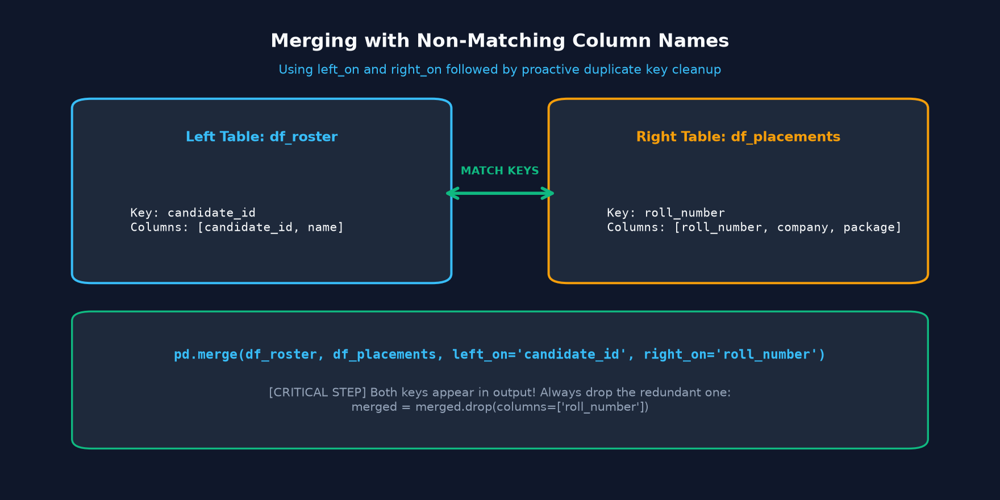
Code Example 1: Merging Candidate Roster with Placement Packages
In this scenario, our college candidate roster uses candidate_id, while the corporate placement cell spreadsheet uses roll_number:
import pandas as pd df_roster = pd.DataFrame({ "candidate_id": [101, 102, 108], "name": ["Aarav", "Diya", "Sanya"] }) df_placements = pd.DataFrame({ "roll_number": [101, 102, 109], "company": ["TCS", "Infosys", "Wipro"], "package_lpa": [7.5, 9.0, 6.5] }) # Execute merge using left_on and right_on df_merged_diff = pd.merge( df_roster, df_placements, left_on="candidate_id", right_on="roll_number", how="inner" ) print(df_merged_diff)
The Redundant Key Column Trap & How to Clean It
Notice a subtle artifact in the output table above: both key columns survived (candidate_id and roll_number). Because they hold identical numeric values, keeping both is redundant, clutters DataFrame inspectability, and consumes extra memory.
In production pipelines, senior developers always prune redundant key columns immediately following the merge:
# Clean up duplicate key column df_cleaned = df_merged_diff.drop(columns=["roll_number"]) print(df_cleaned)
If you prefer avoiding post-merge column dropping, you can rename the column prior to joining:
df_placements.rename(columns={'roll_number': 'candidate_id'}).
Then you can execute a clean on='candidate_id' merge where Pandas automatically produces a single key column!
7. Composite Keys: Multi-Column Merging
In many real-world domains, a single column is not sufficient to uniquely identify an observation. A classic example is semester-wise university grades or monthly financial ledger accounts.
For example, student 101 appears twice in the university records: once in Semester 1, and once in Semester 2. If you attempt to merge enrollment credits with semester GPA using only on='student_id', student 101's Semester 1 credits will erroneously cross-match with their Semester 2 GPA! To guarantee relational integrity, you must merge using a Composite Key.
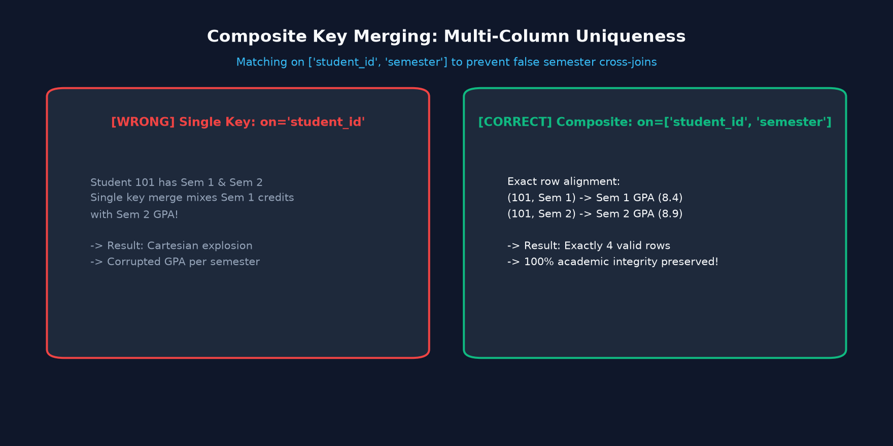
Code Example 1: Enforcing Multi-Column Alignment
To merge on multiple columns, simply pass a list of column names to the on= parameter:
import pandas as pd # Semester Enrolled Credits df_sem_enroll = pd.DataFrame({ "student_id": [101, 101, 102, 102], "semester": [1, 2, 1, 2], "credits": [22, 24, 22, 20] }) # Semester Grade Point Average (GPA) df_sem_gpa = pd.DataFrame({ "student_id": [101, 101, 102, 102], "semester": [1, 2, 1, 2], "gpa": [8.4, 8.9, 9.1, 9.3] }) # Execute Composite Merge on ['student_id', 'semester'] df_comp = pd.merge(df_sem_enroll, df_sem_gpa, on=["student_id", "semester"], how="inner") print(df_comp)
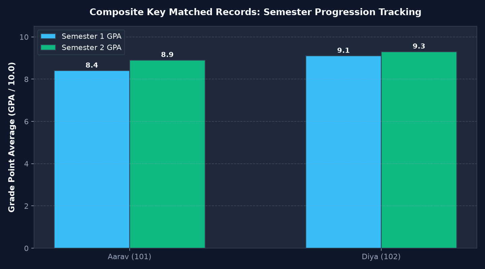
Code Example 2: Composite Suffixes Management
When merging tables with composite keys where additional non-key columns share identical names, Pandas automatically appends suffixes to prevent collision:
# Table with updated remarks df_sem_remarks = pd.DataFrame({ "student_id": [101, 102], "semester": [2, 2], "status": ["Dean List", "Gold Medalist"] }) # Merge with descriptive suffixes df_sem_final = pd.merge( df_comp, df_sem_remarks, on=["student_id", "semester"], how="left" ) print(df_sem_final)
8. Handling Duplicate Keys & The Many-to-Many Explosion Trap
One of the most insidious bugs in production data science pipelines is the Cartesian Product Row Explosion. This occurs when duplicate key values exist on both the Left and Right DataFrames during a merge.
When Pandas encounters duplicate keys on both sides, it must fulfill every possible combination. If key X appears M times in the Left table and N times in the Right table, Pandas produces M × N rows in the output!
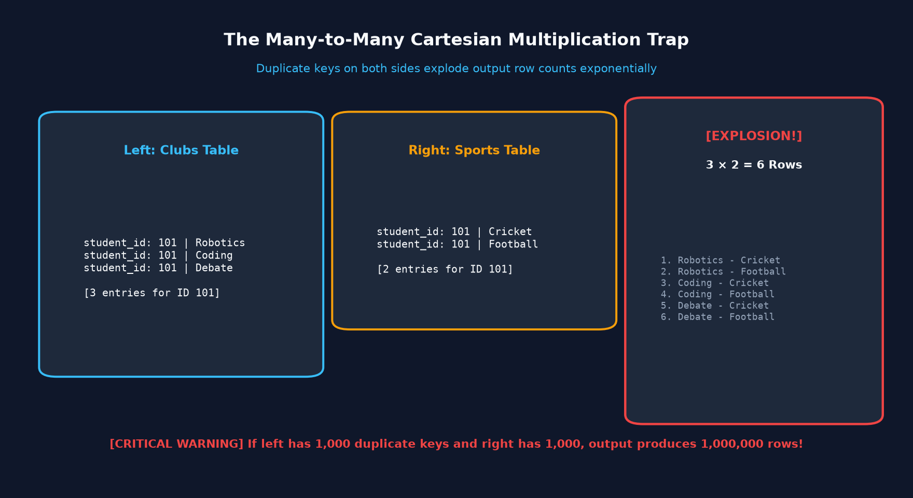
Code Example 1: Demonstrating the M × N Row Explosion
Consider student 101, who belongs to 3 university clubs and participates in 2 sports teams:
import pandas as pd df_clubs = pd.DataFrame({ "student_id": [101, 101, 101, 102], "club": ["Robotics", "Coding", "Debate", "Music"] }) df_sports = pd.DataFrame({ "student_id": [101, 101, 102, 103], "sport": ["Cricket", "Football", "Tennis", "Badminton"] }) df_m2m = pd.merge(df_clubs, df_sports, on="student_id", how="inner") print(df_m2m)
The Real-World Financial Danger of Cartesian Explosions
In the toy example above, 7 rows seems harmless. But imagine an enterprise sales pipeline:
• A customer orders table has 500 orders with key customer_id = 9999.
• A CRM touchpoint table logged 500 marketing email clicks for key customer_id = 9999.
Merging these two tables produces 500 × 500 = 250,000 rows for that single customer! If your dataset has 10,000 repeated customers, the output size explodes into billions of rows, crashing the server with an OutOfMemoryError (OOM) or distorting total revenue metrics by a factor of 500x.
9. Merge Validation (validate=) & The Audit Indicator (indicator=True)
How do professional data engineers safeguard their production pipelines against accidental Cartesian explosions and untracked record drops? Pandas provides two built-in architectural defenses: the validate= parameter and the indicator=True flag.
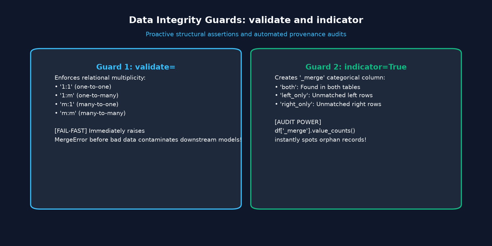
Guard 1: Enforcing Relational Cardinality with validate=
The validate= parameter tests whether the join keys satisfy your expected relationship before completing the merge. If the expectation is violated, Pandas immediately aborts and raises a pd.errors.MergeError:
| Option | Meaning | Check Performed |
|---|---|---|
validate='one_to_one' (or '1:1') |
Strict 1-to-1 mapping | Asserts keys are completely unique in both Left and Right DataFrames. |
validate='one_to_many' (or '1:m') |
Master to Transactions | Asserts keys are unique in the Left DataFrame (master table). |
validate='many_to_one' (or 'm:1') |
Transactions to Lookup | Asserts keys are unique in the Right DataFrame (lookup table). |
validate='many_to_many' (or 'm:m') |
Unrestricted | Permits duplicate keys on both sides (no assertion error raised). |
Code Example 1: Trapping an Accidental Duplicate Key with validate
import pandas as pd df_master = pd.DataFrame({ "student_id": [101, 102, 103], "name": ["Aarav", "Diya", "Kabir"] }) df_grades = pd.DataFrame({ "student_id": [101, 101, 102, 103], # Notice 101 has duplicate course entries! "course": ["CS101", "CS102", "CS101", "CS101"], "grade": ["A", "A+", "B", "A"] }) # Test 1: Validate as one_to_many -> PASSES cleanly! df_pass = pd.merge(df_master, df_grades, on="student_id", validate="one_to_many") print("one_to_many PASSED successfully! Rows:", len(df_pass)) # Test 2: Attempt validate as one_to_one -> Traps the error! try: pd.merge(df_master, df_grades, on="student_id", validate="one_to_one") except pd.errors.MergeError as err: print("CAUGHT EXPECTED ERROR:", err)
Guard 2: Tracing Provenance with indicator=True
When merging large tables, passing indicator=True attaches an audit column named _merge with three possible categorical values:
• 'both': Key was matched in both Left and Right tables.
• 'left_only': Key was found only in Left table.
• 'right_only': Key was found only in Right table.
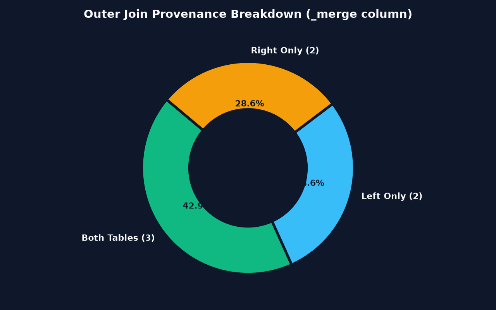
# Perform audit on outer join df_audit = pd.merge(df_students, df_marks, on="student_id", how="outer", indicator=True) # Inspect provenance distribution audit_summary = df_audit["_merge"].value_counts() print(audit_summary)
An Anti-Join finds records in table A that have no matching records in table B. SQL has no native ANTI JOIN keyword, and neither does Pandas. But with indicator=True, computing an Anti-Join takes just one line:
unmatched_left = df_audit[df_audit['_merge'] == 'left_only'].
This instantly yields students who missed exams or customers who never placed an order!
10. Index-Based Joins with DataFrame.join()
While pd.merge() is designed primarily for joining along DataFrame columns, Pandas also provides the object method DataFrame.join(). This method is specifically optimized for joining DataFrames using their row index labels.
Two key architectural differences distinguish DataFrame.join() from pd.merge():
1. Default Join Behavior: DataFrame.join() defaults to a LEFT JOIN (whereas pd.merge() defaults to an INNER JOIN).
2. Index-Centric: By default, it matches the index of the calling DataFrame with the index of the passed DataFrame without requiring you to specify column names.
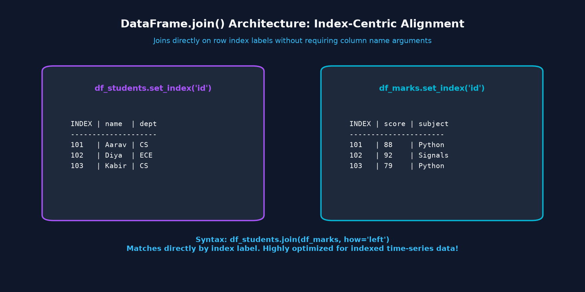
Code Example 1: Basic Index Joining
Let us index both our student roster and exam tables by student_id and perform an index-based join:
import pandas as pd df_students = pd.DataFrame({ "student_id": [101, 102, 103, 104, 105], "name": ["Aarav", "Diya", "Kabir", "Meera", "Rohan"], "dept": ["CS", "ECE", "CS", "MECH", "IT"] }).set_index("student_id") df_marks = pd.DataFrame({ "student_id": [101, 102, 103, 106, 107], "score": [88, 92, 79, 85, 90], "subject": ["Python", "Signals", "Python", "Thermodynamics", "Networks"] }).set_index("student_id") # Execute join (defaults to left join) df_joined = df_students.join(df_marks) print(df_joined)
Code Example 2: Joining on a Column against a Right Index
A frequent pattern occurs when the Left DataFrame has the key as a normal column, but the Right lookup table has the key stored as its index. DataFrame.join() supports this with the on= parameter:
# Left has student_id as regular column df_roster_col = df_students.reset_index() # Join left column onto right index df_joined_col_to_idx = df_roster_col.join(df_marks, on="student_id", how="inner") print(df_joined_col_to_idx)
11. pd.merge() vs DataFrame.join(): When to Use Which
Beginners often wonder: "Why does Pandas provide two different tools for joining tables? Which one should I use?"
While both methods can accomplish similar tasks under the hood, they were engineered for different workflows:
| Architectural Attribute | pd.merge() (or df.merge()) |
DataFrame.join() |
|---|---|---|
| Invocation Style | Functional (pd.merge(a, b)) or Method (a.merge(b)) |
Object Method only (a.join(b)) |
| Default Join Type | 'inner' |
'left' |
| Default Match Target | Shared column names | Row index labels |
| Multi-Table Support | Joins exactly 2 DataFrames at a time | Can join a list of DataFrames (e.g. df.join([df2, df3])) if indices match! |
| Integrity Guards | Supports validate= and indicator=True |
Does not support validate or indicator |
| Different Column Names | Supports left_on and right_on |
Requires renaming columns beforehand |
Use pd.merge() for general relational modeling, complex multi-key alignments, foreign key lookups, and when you need data integrity validation (validate=).
Use DataFrame.join() when working with time-series data indexed by datetime stamps, or when joining 3 or more pre-indexed dimension tables simultaneously.
12. Stacking Data with pd.concat(): Rows vs Columns (axis=0 vs axis=1)
Whereas merge() and join() combine tables by matching relational key values, pd.concat() performs physical stacking along a specified mathematical axis.
Think of concat() like physical index cards:
• Vertical Stacking (axis=0): Stacking one deck of cards on top of another. Used for batch processing across time periods.
• Horizontal Stacking (axis=1): Placing two cards side-by-side. Used for appending engineered feature blocks.
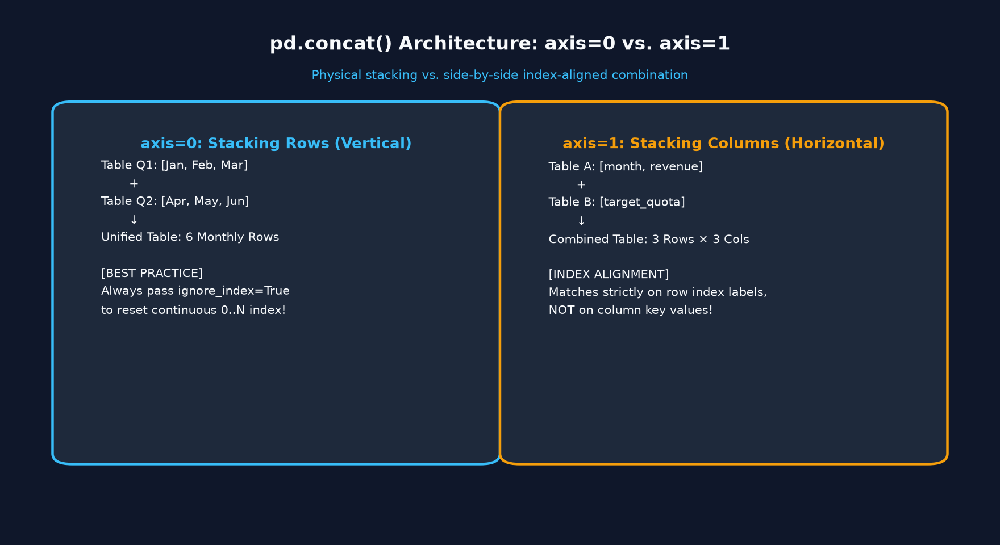
Code Example 1: Vertical Stacking of Quarterly Sales Batches (axis=0)
In this example, two quarterly sales feeds (Q1 and Q2) arrive as separate DataFrames. We concatenate them vertically into an ongoing financial ledger:
import pandas as pd # Q1 Sales Batch df_q1 = pd.DataFrame({ "month": ["Jan", "Feb", "Mar"], "revenue": [12000, 15000, 18000] }) # Q2 Sales Batch df_q2 = pd.DataFrame({ "month": ["Apr", "May", "Jun"], "revenue": [14000, 17500, 21000] }) # Stack vertically with ignore_index=True df_annual = pd.concat([df_q1, df_q2], axis=0, ignore_index=True) print(df_annual) print("\nTotal H1 Revenue: INR", f"{df_annual['revenue'].sum():,}")
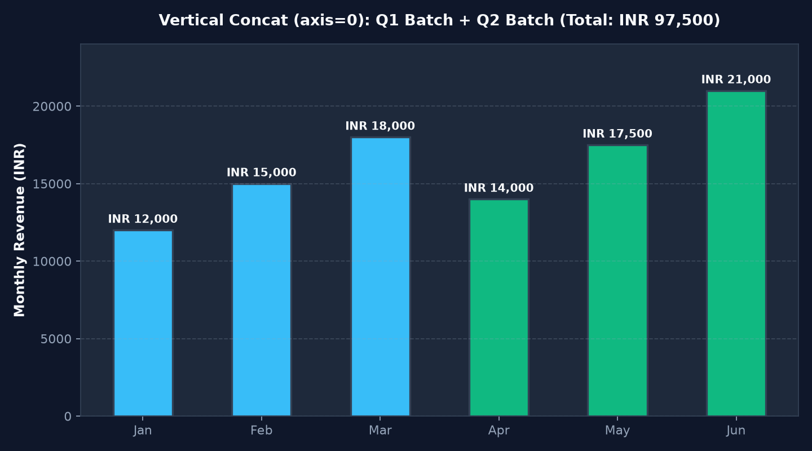
If you omit ignore_index=True, Pandas preserves the original row index labels from each chunk. The result will have duplicate index values (0, 1, 2, 0, 1, 2). When you later execute df.loc[0], Pandas will return multiple rows instead of one! Always pass ignore_index=True when concatenating sequential row batches.
13. pd.concat() Index Alignment & The Pitfall of Horizontal Concat
A dangerous misconception among beginners is assuming that pd.concat([df1, df2], axis=1) simply "glues" two DataFrames side-by-side row-by-row like pasting columns in Microsoft Excel.
This is false. In Pandas, concat(axis=1) matches rows strictly on their Row Index Labels, NOT on their row position or line number!
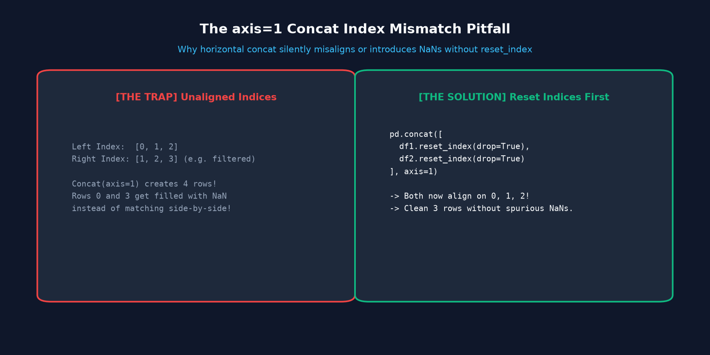
Code Example 1: The Index Mismatch Trap
Watch what happens when one of the DataFrames has undergone filtering or index modification:
import pandas as pd df_a = pd.DataFrame({"score": [80, 90, 95]}, index=[0, 1, 2]) df_b = pd.DataFrame({"grade": ["A", "A+", "O"]}, index=[1, 2, 3]) # Mismatched index! # Naive Horizontal Concat df_bad = pd.concat([df_a, df_b], axis=1) print(df_bad)
Instead of 3 clean rows, the DataFrame expanded to 4 rows, corrupting row 0 and row 3 with NaN!
The Robust Solution: Reset Indices Before Horizontal Concat
If your goal is to bind columns purely by sequential row order without regard to prior indexing, reset the index with drop=True first:
# Safely align indices before horizontal concatenation df_fixed = pd.concat([ df_a.reset_index(drop=True), df_b.reset_index(drop=True) ], axis=1) print(df_fixed)
14. Master Decision Guide: Merge vs Join vs Concat
To ensure you never hesitate when combining DataFrames in a production application, follow this master decision framework:
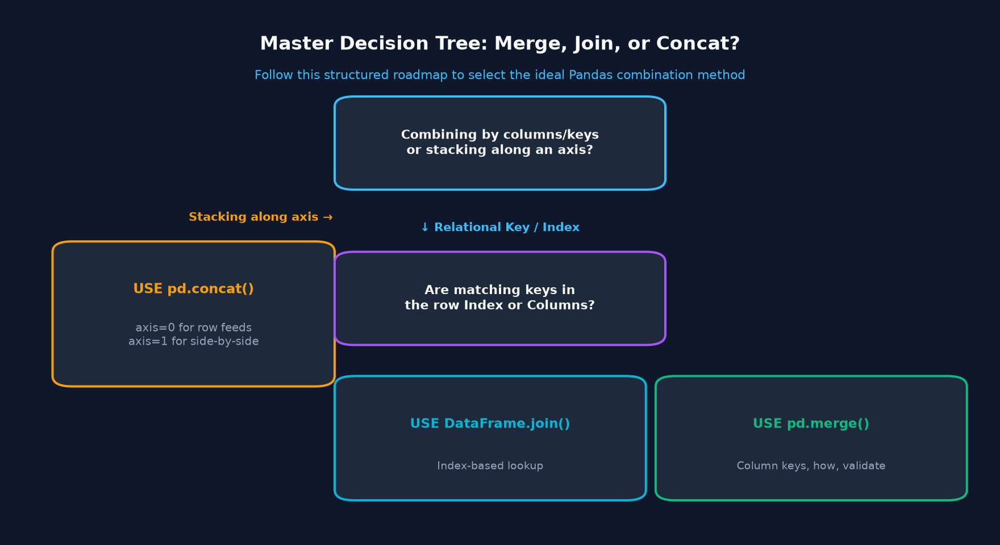
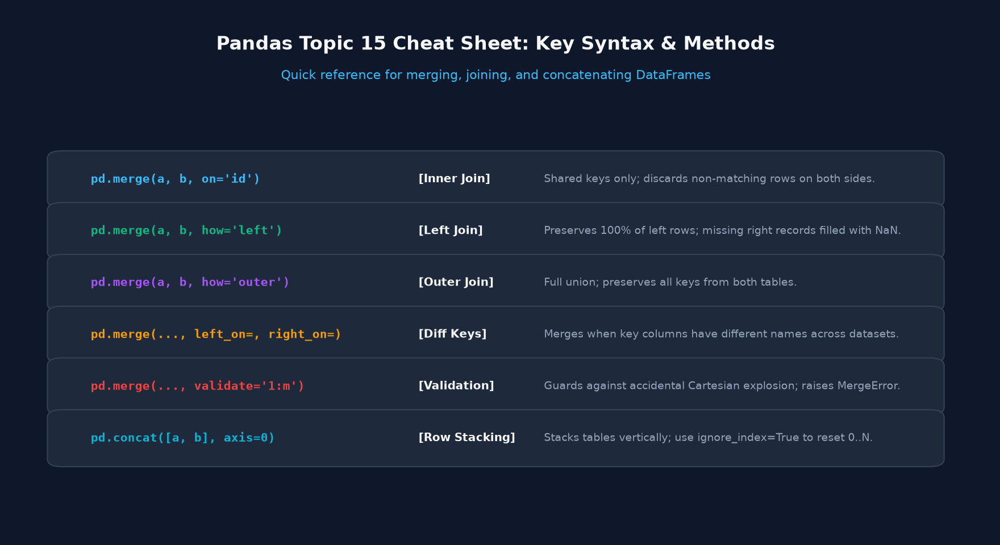
Decision Matrix for Data Engineers
| Scenario / Intent | Recommended Tool | Key Syntax to Use |
|---|---|---|
| Joining tables using a common ID column (SQL Join style) | pd.merge() |
pd.merge(left, right, on='id', how='left') |
| Joining tables where key column names differ | pd.merge() |
pd.merge(left, right, left_on='x', right_on='y') |
| Validating that left table has unique primary keys | pd.merge() |
pd.merge(left, right, on='id', validate='1:m') |
| Auditing which records were matched vs dropped | pd.merge() |
pd.merge(left, right, on='id', how='outer', indicator=True) |
| Joining tables already indexed on the join key | DataFrame.join() |
df_left.join(df_right, how='inner') |
| Joining 3 or more indexed dimension tables at once | DataFrame.join() |
df_base.join([df_dim1, df_dim2, df_dim3]) |
| Stacking monthly or daily transaction files vertically | pd.concat() |
pd.concat([jan, feb, mar], axis=0, ignore_index=True) |
| Binding pre-computed ML feature matrices side-by-side | pd.concat() |
pd.concat([X_num, X_cat], axis=1) |
15. Common Pitfalls, Silent Errors & Troubleshooting Guide
Combining datasets is the single most common source of data corruption in machine learning pipelines. Because Pandas will often execute operations without raising an explicit error, bugs remain silent until models fail in production. Here is your ultimate field guide to identifying and resolving the 10 most lethal merge traps:
| # | Silent Bug / Trap | Underlying Cause | Symptom in Downstream Data | The Production Remedy |
|---|---|---|---|---|
| 1 | Silent Row Deletion | Using default how='inner' when keys have slight typos or missing records in the right table. |
Total customer or transaction row count mysteriously drops by 15-30%. | Use how='left' for master tables; run indicator=True to audit drop rates. |
| 2 | Cartesian Explosion | Duplicate key values present in both Left and Right tables (Many-to-Many merge). | Row counts explode exponentially; memory consumption causes server OOM crash. | Always supply validate='1:m' or validate='m:1' to trap unexpected duplicates immediately. |
| 3 | Type Mismatch Failure | Key column is int64 in Left table but object (string) in Right table (e.g. 101 vs '101'). |
Merge completes with 0 matched rows or raises ValueError. |
Explicitly cast types prior to merging: df['id'] = df['id'].astype(int). |
| 4 | Trailing Whitespace Desync | Text keys contain invisible trailing spaces (e.g., 'CS ' vs 'CS'). |
Keys look identical on visual inspection, but inner join drops them. | Strip whitespace before joining: df['key'] = df['key'].str.strip(). |
| 5 | Duplicate Suffix Explosion | Merging multiple tables consecutively creates messy columns like date_x, date_y, date_x_x. |
Code breaks when referencing df['date'] downstream. |
Explicitly pass clean suffixes: suffixes=('_order', '_shipment'), or drop unneeded columns prior to join. |
| 6 | Horizontal Concat NaN Row Spread | Concatenating along axis=1 when DataFrames have unaligned row indices. |
Output has far more rows than expected with checkerboards of NaN. |
Apply .reset_index(drop=True) on all input DataFrames prior to axis=1 concat. |
| 7 | Duplicate Index Labels in axis=0 | Concatenating rows without ignore_index=True. |
Row index resets to 0 repeatedly; df.loc[0] returns multiple rows. |
Always pass ignore_index=True when appending row batches. |
| 8 | Overwriting Valid Keys on Diff Names | Using left_on='emp_id' and right_on='id' leaves redundant column. |
Accidental reference to wrong ID column or memory bloat. | Immediately call df.drop(columns=['id']) after the merge. |
| 9 | Merging on Float Keys | Using floating-point numbers as join keys. | Floating-point epsilon differences (e.g., 0.1 + 0.2 != 0.3) cause matches to fail randomly. |
Never join on floats! Convert numeric codes to integers or clean strings. |
| 10 | Accidental Inferred Composite Join | Omitting on= parameter entirely when DataFrames share unexpected column names (e.g., comments). |
Output produces zero rows because Pandas attempted to match on all common headers. | Never omit the on= parameter; always declare join keys explicitly. |
16. Guided Capstone Case Study A: College Student Lifecycle Integration
In this guided real-world capstone, you will act as the Chief Data Architect for an engineering university. The institution maintains four separate operational data tables:
- Master Student Roster (
students): Enrolled students with roll numbers, names, department codes, and admission years. - Department Reference (
dept_ref): Department names and Head of Department (HOD) faculty names. - Attendance Registry (
attendance): Cumulative semester attendance percentages. - Midterm Exam Results (
midterm_exams): Subject scores for students who sat for midterm exams.
Your objective is to build an integrated end-to-end analytical pipeline that unifies these tables, calculates department performance, and audits student attendance eligibility.
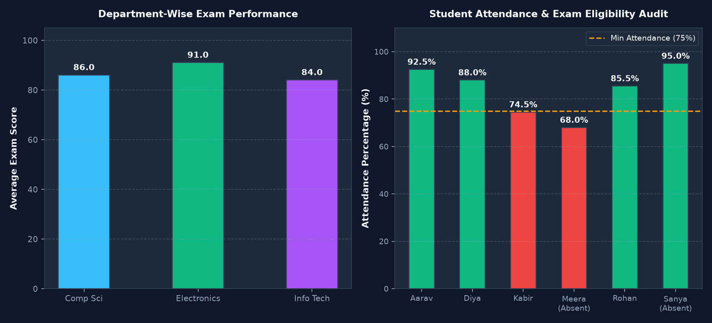
Full End-to-End Verified Code Pipeline
import pandas as pd # Step 1: Ingest Data Sources students = pd.DataFrame({ "roll_no": [101, 102, 103, 104, 105, 106], "name": ["Aarav Sharma", "Diya Patel", "Kabir Singh", "Meera Nair", "Rohan Joshi", "Sanya Verma"], "dept_code": ["CS", "ECE", "CS", "MECH", "IT", "CS"], "admission_year": [2023, 2023, 2022, 2023, 2022, 2024] }) dept_ref = pd.DataFrame({ "dept_code": ["CS", "ECE", "MECH", "IT", "CIVIL"], "department_name": ["Computer Science", "Electronics & Comm", "Mechanical", "Information Tech", "Civil Engg"], "hod": ["Dr. Rao", "Dr. Sen", "Dr. Mehta", "Dr. Gupta", "Dr. Paul"] }) attendance = pd.DataFrame({ "roll_no": [101, 102, 103, 104, 105, 106], "attendance_pct": [92.5, 88.0, 74.5, 68.0, 85.5, 95.0] }) midterm_exams = pd.DataFrame({ "roll_no": [101, 101, 102, 103, 105], "subject": ["Data Structures", "DBMS", "Signals", "Data Structures", "Web Dev"], "score": [88, 94, 91, 76, 84] }) # Step 2: Merge Students with Department Reference (Many-to-One) students_dept = pd.merge(students, dept_ref, on="dept_code", how="left", validate="many_to_one") # Step 3: Merge with Attendance Registry (One-to-One) students_profile = pd.merge(students_dept, attendance, on="roll_no", how="left", validate="one_to_one") # Step 4: Merge with Midterm Exam Results (One-to-Many Left Join) lifecycle_full = pd.merge(students_profile, midterm_exams, on="roll_no", how="left", validate="one_to_many") print("=== Integrated Student Lifecycle Matrix (Head 5) ===") print(lifecycle_full[["roll_no", "name", "department_name", "attendance_pct", "subject", "score"]].head(5)) # Step 5: Department Exam Performance Aggregation dept_avg = lifecycle_full.dropna(subset=["score"]).groupby("department_name")["score"].mean().round(2) print("\n=== Department Average Exam Scores ===") print(dept_avg) # Step 6: Identify Students with Attendance Below 75% low_attendance = students_profile[students_profile["attendance_pct"] < 75.0] print("\n=== Students Ineligible Due to Attendance (<75%) ===") print(low_attendance[["roll_no", "name", "department_name", "attendance_pct"]])
17. Guided Capstone Case Study B: E-Commerce Multi-Table Sales Pipeline
In this second guided case study, you are tasked with processing real-world transactional orders for an electronics retailer. The business maintains three primary operational tables:
- Customers: Customer ID, full name, shipping city, and membership loyalty tier.
- Products Catalog: SKU ID, product title, category, and unit retail price (INR).
- Orders Ledger: Order ID, customer ID, SKU ID, quantity ordered, and promotional discount percentage.
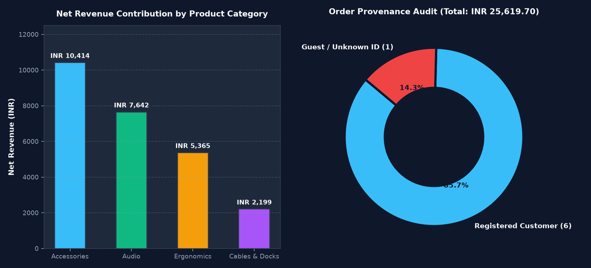
Full End-to-End Verified Code Pipeline
import pandas as pd # Ingest Operational Datasets customers = pd.DataFrame({ "customer_id": ["C101", "C102", "C103", "C104", "C105"], "name": ["Ananya Iyer", "Bikram Das", "Chirag Reddy", "Deepa Malik", "Eshwar Sen"], "city": ["Bengaluru", "Mumbai", "Hyderabad", "Delhi", "Chennai"], "tier": ["Gold", "Silver", "Platinum", "Bronze", "Gold"] }) products = pd.DataFrame({ "sku_id": ["P01", "P02", "P03", "P04", "P05"], "product_name": ["Wireless Mouse", "Mechanical Keyboard", "USB-C Hub", "Monitor Stand", "Noise-Cancelling Headphones"], "category": ["Accessories", "Accessories", "Cables & Docks", "Ergonomics", "Audio"], "unit_price": [1299.00, 4499.00, 2199.00, 1850.00, 8990.00] }) orders = pd.DataFrame({ "order_id": ["ORD-1001", "ORD-1002", "ORD-1003", "ORD-1004", "ORD-1005", "ORD-1006", "ORD-1007"], "customer_id": ["C101", "C102", "C101", "C103", "C104", "C106", "C102"], "sku_id": ["P01", "P02", "P03", "P05", "P01", "P04", "P04"], "quantity": [2, 1, 1, 1, 3, 2, 1], "discount_pct": [0.05, 0.10, 0.00, 0.15, 0.00, 0.05, 0.00] }) # Step 1: Enrich Orders with Product Catalog (Many-to-One Validation) orders_prod = pd.merge(orders, products, on="sku_id", how="left", validate="many_to_one") # Step 2: Calculate Financial Net Line Item Amounts orders_prod["gross_amount"] = orders_prod["quantity"] * orders_prod["unit_price"] orders_prod["net_amount"] = orders_prod["gross_amount"] * (1 - orders_prod["discount_pct"]) # Step 3: Enrich with Customer Details using Left Join with Indicator orders_cust = pd.merge(orders_prod, customers, on="customer_id", how="left", indicator=True) # Step 4: Audit for Unregistered Customer IDs unknown_orders = orders_cust[orders_cust["_merge"] == "left_only"] print("=== Unregistered Customer Order Detected ===") print(unknown_orders[["order_id", "customer_id", "product_name", "net_amount"]]) # Step 5: Net Revenue by Product Category category_rev = orders_cust.groupby("category")["net_amount"].sum().round(2) print("\n=== Net Revenue Contribution by Category ===") print(category_rev) print(f"\nTotal Pipeline Net Revenue: INR {orders_cust['net_amount'].sum():,.2f}")
18. Real-World Interactive Practice Exercises
Test and solidify your DataFrame combination mastery across 21 rigorous exercises organized into 5 progressive categories, culminating in a full multi-table hospital system Capstone project. Click on any exercise summary to reveal the comprehensive solution code and execution breakdown.
Category 1: Core Mechanics & Basic Syntax (Q1 – Q4)
Question 1: Basic Inner Join on Shared Department Key
Scenario: You have an employee table df_emp with ['emp_id', 'name', 'dept_id'] and a departments table df_dept with ['dept_id', 'dept_name']. Write code to execute an inner join on dept_id.
import pandas as pd df_emp = pd.DataFrame({"emp_id": [1, 2, 3], "name": ["Alex", "Beth", "Carl"], "dept_id": [10, 20, 30]}) df_dept = pd.DataFrame({"dept_id": [10, 20, 40], "dept_name": ["Finance", "IT", "HR"]}) merged = pd.merge(df_emp, df_dept, on="dept_id", how="inner") print(merged)
Explanation: Department 30 (Carl) and Department 40 (HR) do not exist on both sides, so an Inner Join excludes them, returning exactly the 2 matching records.
Question 2: Preserving All Staff with a Left Join
Scenario: Repeat Question 1 using a Left Join so that employee Carl (who belongs to unlisted Department 30) is preserved. Check how Pandas represents his missing dept_name.
merged_left = pd.merge(df_emp, df_dept, on="dept_id", how="left") print(merged_left)
Explanation: Left Join preserves all 3 employees; Carl's dept_name is automatically assigned NaN.
Question 3: Handling Overlapping Column Names with Custom Suffixes
Scenario: Both df_sales_2023 and df_sales_2024 contain columns ['store_id', 'revenue']. Merge on store_id with suffixes ('_2023', '_2024').
df_23 = pd.DataFrame({"store_id": [1, 2], "revenue": [100000, 150000]})
df_24 = pd.DataFrame({"store_id": [1, 2], "revenue": [120000, 180000]})
res = pd.merge(df_23, df_24, on="store_id", suffixes=("_2023", "_2024"))
print(res)
Explanation: Passing clear suffixes prevents vague names like revenue_x and revenue_y.
Question 4: Full Outer Join Key Union
Scenario: You want a complete list of all stores present in either 2023 or 2024. Write an outer merge code and print the count of unique stores.
df_a = pd.DataFrame({"store_id": [1, 2, 3], "sales": [50, 60, 70]})
df_b = pd.DataFrame({"store_id": [2, 3, 4], "footfall": [500, 600, 700]})
outer = pd.merge(df_a, df_b, on="store_id", how="outer")
print(outer)
Explanation: Stores 1, 2, 3, and 4 all survive in the outer union (A ∪ B).
Category 2: Join Cardinality & Preservation (Q5 – Q8)
Question 5: One-to-Many Order Items Expansion
Scenario: An orders table has 1 row per order. An order_items table has multiple rows per order. Execute a merge and verify row count.
orders = pd.DataFrame({"order_id": [101, 102], "customer": ["Alice", "Bob"]})
items = pd.DataFrame({"order_id": [101, 101, 102], "item": ["Pen", "Book", "Desk"]})
o2m = pd.merge(orders, items, on="order_id", how="left", validate="one_to_many")
print(o2m)
Explanation: Order 101 cleanly expands to 2 rows to accommodate both line items while Alice's attributes are broadcasted.
Question 6: Trapping Unintended Duplicate Keys
Scenario: You expect a lookup table to have unique keys. Use validate='many_to_one' to guarantee that right table keys are unique.
txns = pd.DataFrame({"txn_id": [1, 2], "user_id": [10, 20]})
users = pd.DataFrame({"user_id": [10, 10], "city": ["Mumbai", "Pune"]}) # Bad duplicate!
try:
pd.merge(txns, users, on="user_id", validate="many_to_one")
except pd.errors.MergeError as err:
print("Safety Guard Triggered:", err)
Explanation: The duplicate user key 10 was trapped immediately before causing an accidental row multiplication.
Question 7: Performing an Anti-Join Audit
Scenario: Find all customers who have registered in df_cust but never placed an order in df_orders using indicator=True.
df_cust = pd.DataFrame({"cid": [1, 2, 3], "name": ["Sam", "Tara", "Uma"]})
df_ord = pd.DataFrame({"cid": [1, 2], "amt": [250, 450]})
merged = pd.merge(df_cust, df_ord, on="cid", how="left", indicator=True)
inactive = merged[merged["_merge"] == "left_only"]
print(inactive[["cid", "name"]])
Explanation: Filtering on _merge == 'left_only' implements a lightning-fast Anti-Join.
Question 8: Cross Join / Cartesian Product (how='cross')
Scenario: Generate all possible combinations of 3 T-shirt sizes and 2 colors using how='cross'.
sizes = pd.DataFrame({"size": ["S", "M", "L"]})
colors = pd.DataFrame({"color": ["Red", "Blue"]})
cross = pd.merge(sizes, colors, how="cross")
print(cross)
Explanation: Cross join matches every row in Left with every row in Right ($3 \times 2 = 6$ rows).
Category 3: Multi-Key & Advanced Alignment (Q9 – Q12)
Question 9: Merging with Different Column Names
Scenario: Merge df_drivers (key: license_no) with df_trips (key: driver_permit). Remove the redundant key column afterwards.
drivers = pd.DataFrame({"license_no": ["DL10", "DL20"], "driver_name": ["Ramesh", "Suresh"]})
trips = pd.DataFrame({"driver_permit": ["DL10", "DL20"], "fare": [350, 500]})
merged = pd.merge(drivers, trips, left_on="license_no", right_on="driver_permit")
merged = merged.drop(columns=["driver_permit"])
print(merged)
Explanation: left_on and right_on link mismatched names, and drop(columns=...) keeps the schema clean.
Question 10: Composite Key Merge on Date and Region
Scenario: Merge target revenue with actual revenue matching on both ['date', 'region'].
targets = pd.DataFrame({"date": ["2024-01", "2024-01"], "region": ["North", "South"], "target": [100, 150]})
actuals = pd.DataFrame({"date": ["2024-01", "2024-01"], "region": ["North", "South"], "actual": [110, 145]})
comp = pd.merge(targets, actuals, on=["date", "region"])
print(comp)
Explanation: Both date and region must match for rows to align.
Question 11: Merging on Column against Right Index
Scenario: Left DataFrame has city_code as a column. Right DataFrame has city_code as its index. Merge using left_on and right_index=True.
df_branches = pd.DataFrame({"branch": ["B1", "B2"], "code": ["BLR", "DEL"]})
df_cities = pd.DataFrame({"city_name": ["Bengaluru", "Delhi"]}, index=["BLR", "DEL"])
res = pd.merge(df_branches, df_cities, left_on="code", right_index=True)
print(res)
Explanation: right_index=True instructs Pandas to join on the index labels of the right DataFrame.
Question 12: Joining Three DataFrames Simultaneously with join()
Scenario: You have 3 DataFrames all indexed by user_id. Join them in a single call using df1.join([df2, df3]).
d1 = pd.DataFrame({"name": ["A", "B"]}, index=[1, 2])
d2 = pd.DataFrame({"age": [25, 30]}, index=[1, 2])
d3 = pd.DataFrame({"role": ["Eng", "Des"]}, index=[1, 2])
joined_all = d1.join([d2, d3])
print(joined_all)
Explanation: DataFrame.join() accepts a list of DataFrames for fast index alignment across multiple tables.
Category 4: Concatenation & Index Pitfalls (Q13 – Q16)
Question 13: Vertical Concat with Continuous Index Reset
Scenario: Concatenate two batches of transaction logs using axis=0 and reset the index to 0..N.
b1 = pd.DataFrame({"tx": [101, 102]})
b2 = pd.DataFrame({"tx": [103, 104]})
stacked = pd.concat([b1, b2], axis=0, ignore_index=True)
print(stacked)
Explanation: ignore_index=True creates a pristine sequential integer index.
Question 14: Creating Hierarchical Keys in Vertical Concat
Scenario: Concatenate Q1 and Q2 tables vertically while tagging their provenance with hierarchical keys keys=['Q1', 'Q2'].
q1 = pd.DataFrame({"val": [10, 20]})
q2 = pd.DataFrame({"val": [30, 40]})
multi = pd.concat([q1, q2], keys=["Q1", "Q2"])
print(multi)
Explanation: The keys= argument constructs a MultiIndex tagging each row with its source partition.
Question 15: Fixing Horizontal Concat Index Mismatch
Scenario: Two DataFrames have mismatched indices [10, 20] and [0, 1]. Combine them side-by-side without generating NaNs.
x = pd.DataFrame({"feat1": [1.2, 3.4]}, index=[10, 20])
y = pd.DataFrame({"feat2": [5.6, 7.8]}, index=[0, 1])
fixed = pd.concat([x.reset_index(drop=True), y.reset_index(drop=True)], axis=1)
print(fixed)
Explanation: Resetting both indices ensures rows 0 and 1 bind strictly by ordinal position.
Question 16: Concat Inner Join on Differing Columns
Scenario: Table A has columns ['a', 'b', 'c'] and Table B has ['b', 'c', 'd']. Stack them vertically keeping only shared columns (join='inner').
ta = pd.DataFrame({"a": [1], "b": [2], "c": [3]})
tb = pd.DataFrame({"b": [4], "c": [5], "d": [6]})
res = pd.concat([ta, tb], axis=0, join="inner", ignore_index=True)
print(res)
Explanation: join='inner' drops columns a and d, retaining only common headers b and c.
Category 5: Production Auditing & Edge Cases (Q17 – Q20)
Question 17: Key Data Type Casting Prior to Merge
Scenario: In df1, id is stored as string ['101', '102']. In df2, id is stored as integer [101, 102]. Write safe type casting code.
df1 = pd.DataFrame({"id": ["101", "102"], "val": [10, 20]})
df2 = pd.DataFrame({"id": [101, 102], "score": [90, 95]})
df1["id"] = df1["id"].astype("int64")
merged = pd.merge(df1, df2, on="id")
print(merged)
Explanation: Casting prevents silent empty merges caused by string vs integer comparisons.
Question 18: Auditing Merge Match Ratio
Scenario: Write a utility function that prints the exact match percentage between two DataFrames on key account_id.
def audit_merge_health(df_left, df_right, key): audit = pd.merge(df_left, df_right, on=key, how="left", indicator=True) match_pct = (audit["_merge"] == "both").mean() * 100 print(f"Health Check: {match_pct:.1f}% of left keys successfully matched in right table.") audit_merge_health(df_students, df_marks, "student_id")
Explanation: 3 out of 5 students matched, delivering an exact 60.0% health ratio.
Question 19: Safe Many-to-One Imputation of Missing Categories
Scenario: Merge an items table with a category lookup table. If a category is missing, impute 'Uncategorized'.
items = pd.DataFrame({"sku": ["A", "B"], "cat_code": [1, 99]})
cats = pd.DataFrame({"cat_code": [1], "cat_name": ["Electronics"]})
m = pd.merge(items, cats, on="cat_code", how="left")
m["cat_name"] = m["cat_name"].fillna("Uncategorized")
print(m)
Explanation: Left join preserves missing category codes, and fillna() secures clean categoricals.
Question 20: Merging Time-Series Aligned Data with merge_asof
Scenario: Match high-frequency stock trades with the most recent quote timestamp using pd.merge_asof().
trades = pd.DataFrame({"time": [1001, 1005, 1012], "ticker": ["AAPL", "AAPL", "AAPL"], "trade_px": [150.1, 150.4, 150.9]})
quotes = pd.DataFrame({"time": [1000, 1004, 1010], "ticker": ["AAPL", "AAPL", "AAPL"], "bid_px": [150.0, 150.3, 150.8]})
asof = pd.merge_asof(trades, quotes, on="time", by="ticker")
print(asof)
Explanation: pd.merge_asof() performs nearest-backward timestamp alignment, ideal for algorithmic trading.
Capstone Mini-Project: Multi-Table Hospital Health System Pipeline (Q21)
Question 21 (Capstone): End-to-End Hospital Patient Care Pipeline
Comprehensive Problem Statement: You are designing the core patient admission and billing data engine for a metropolitan hospital network. You are provided three operational tables:
1. patients: ['patient_id', 'name', 'ward_code']
2. wards: ['ward_code', 'ward_name', 'per_day_charge']
3. treatments: ['patient_id', 'procedure', 'cost']
Write a production pipeline that:
• Validates that wards has unique ward codes (many_to_one).
• Merges patient ward details using a Left Join.
• Enriches with multiple procedures per patient using a Left Join.
• Imputes missing treatments with 'No Procedure' and cost = 0.
• Computes total billed revenue per ward.
import pandas as pd patients = pd.DataFrame({ "patient_id": ["P101", "P102", "P103"], "name": ["Kavita", "Rajesh", "Sunita"], "ward_code": ["ICU", "GEN", "ICU"] }) wards = pd.DataFrame({ "ward_code": ["ICU", "GEN", "PED"], "ward_name": ["Intensive Care", "General Ward", "Pediatrics"], "per_day_charge": [8000, 2500, 3500] }) treatments = pd.DataFrame({ "patient_id": ["P101", "P101", "P102"], "procedure": ["Ventilator", "Dialysis", "X-Ray"], "cost": [15000, 12000, 1500] }) # Step 1: Validate & Merge Patients with Wards p_ward = pd.merge(patients, wards, on="ward_code", how="left", validate="many_to_one") # Step 2: Merge with Treatments (Left Join) p_full = pd.merge(p_ward, treatments, on="patient_id", how="left") # Step 3: Impute Missing Treatment Records p_full["procedure"] = p_full["procedure"].fillna("Routine Observation") p_full["cost"] = p_full["cost"].fillna(0) # Step 4: Aggregate Procedure Revenue by Ward ward_rev = p_full.groupby("ward_name")["cost"].sum().reset_index() print("=== Patient Master Matrix ===") print(p_full[["patient_id", "name", "ward_name", "procedure", "cost"]]) print("\n=== Total Procedure Revenue by Ward ===") print(ward_rev)
Capstone Summary: Intensive Care billed INR 27,000 across procedures while General Ward billed INR 1,500. Sunita's stay was preserved with zero procedure costs via Left Join!
19. Summary, Best Practices Checklist, Comprehensive Glossary & Topic 16 Preview
Topic 15 Core Architectural Summary
Throughout this comprehensive guide, we explored the three pillars of data combination in Pandas:
pd.merge()delivers full ANSI SQL relational join capabilities. It excels at multi-table schemas, supportshow='inner'|'left'|'right'|'outer'|'cross', multi-column composite keys, column renaming withleft_onandright_on, and production-grade safety assertions withvalidate=andindicator=True.DataFrame.join()provides high-speed convenience for index-centric lookups. It defaults to a left join and can combine multiple DataFrames sharing identical row index labels in a single call.pd.concat()performs physical stacking along an axis.axis=0stacks row partitions sequentially (always passignore_index=True), whileaxis=1binds columns horizontally based strictly on row index labels.
Data Architect's Pre-Flight Checklist
| Check | Question to Ask Before Merging | Recommended Action |
|---|---|---|
| ☑ 1 | Did I explicitly declare the join key using on=? |
Never let Pandas guess common column names. |
| ☑ 2 | Do the key columns share the identical data type? | Ensure both sides are int64 or both are clean str. |
| ☑ 3 | Is the master table placed on the Left side? | Use how='left' to protect against silent record drops. |
| ☑ 4 | Could duplicate keys trigger a Cartesian explosion? | Pass validate='one_to_many' or validate='many_to_one'. |
| ☑ 5 | Did I drop redundant key columns after left_on/right_on? |
Call .drop(columns=[...]) immediately to preserve clean schemas. |
| ☑ 6 | Did I pass ignore_index=True when using concat(axis=0)? |
Prevents duplicate row index labels across stacked batches. |
Comprehensive Key Terminology Glossary
| Term | Definition & Architectural Significance |
|---|---|
| Relational Join | An operation that matches rows from two separate DataFrames based on equal values in designated key columns. |
| Inner Join (A ∩ B) | Join mode keeping only rows whose key exists in both Left and Right tables. Discards non-matching records on both sides. |
| Left Join (A) | Join mode preserving 100% of rows from the Left DataFrame. Missing Right attributes are filled with NaN. |
| Full Outer Join (A ∪ B) | Join mode retaining all keys from both DataFrames, producing the complete union of records with NaN padding. |
| Composite Key | A combination of two or more columns (e.g. ['student_id', 'semester']) required to establish record uniqueness. |
| Cartesian Explosion | An exponential blowup in row count caused by merging duplicate keys on both sides (M × N). |
| Provenance Indicator | The _merge categorical column generated by indicator=True detailing whether a row came from left_only, right_only, or both. |
| Anti-Join | An audit operation filtering for rows in one table that have no corresponding match in another table. |
| Cardinality Validation | Enforcing relational constraints (1:1, 1:m, m:1) using validate= to fail fast on unexpected duplicates. |
| Axis Stacking | Physically concatenating DataFrames vertically (axis=0) or horizontally (axis=1) using pd.concat(). |
Topic 16: Reshaping & Pivoting (Pivot, Melt, Stack, Unstack, Crosstab) — Now that you know how to combine tables from different files, you will discover how to dynamically reshape DataFrames between wide reporting layouts and long tidy formats for deep statistical analysis and machine learning.